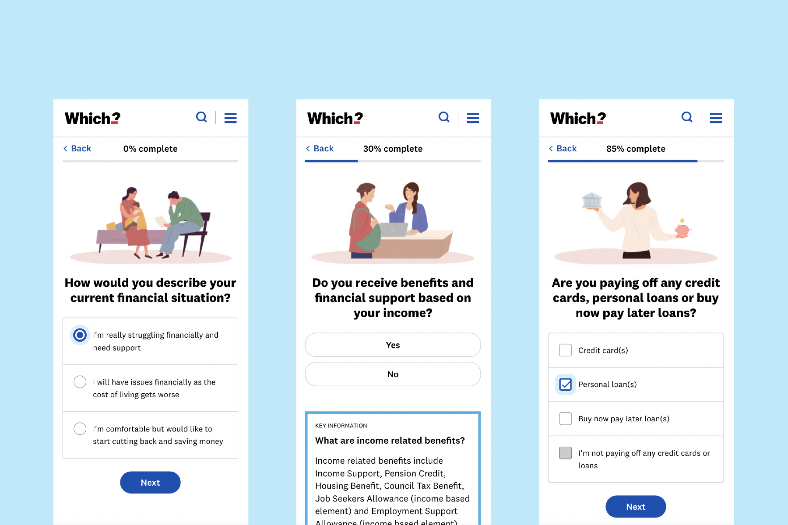

Which?— VISIT WHICH?
Mobile screenshots of the recently redesigned homepage - better showing the breadth and benefits of Which?
Building a modern, accessible and performant user experience
I joined Which? in January 2022 and we have been on a rapid process of improvement. A major area of work I’ve been leading on has been our recent brand and proposition refresh. We've used this an opportunity to not only improve the user experience of our product offering – but also shift perceptions of what people can expect from Which?.
Iterations we’ve made to our websites navigation, IA, homepage and topic verticals have brought successful outcomes. We’ve seen huge increases in engagement with the global navigation and exit rates have dropped dramatically due to UX improvements across the homepage and topic verticals. This was a primary area of focus as we endeavour to make users more aware of the range of ways we can help them.
More information and work will be added soon.

Desktop screenshots of topic verticals that quickly bring users to high value content
Laptop product listing page linking to our trusted and independent reviews – logged out view
Logged out view of the Which? app – logged out view
One of our major USPs at Which? are the trusted and independent reviews we create for thousands of products and services - from washing machines to broadband providers. We're continuing to make sure we offer a best in class experience for members in this space. In a world full of fake reviews and misinformation – it's important people have a resource they can rely on for accurate information.
A tool to help people through the cost of living crisis
Another big area of focus has been helping people through the cost of living crisis. We’ve developed a range of content initiatives and tools to help people improve their financial situation. We’ve also been making major strides in improving the performance and accessibility of our website and app.